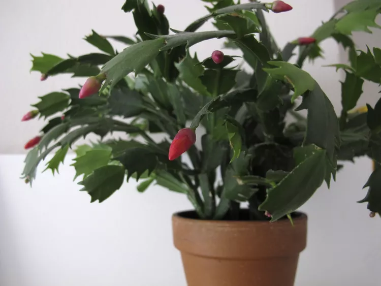
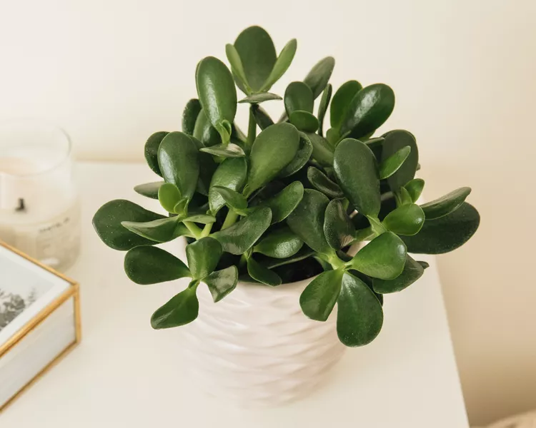
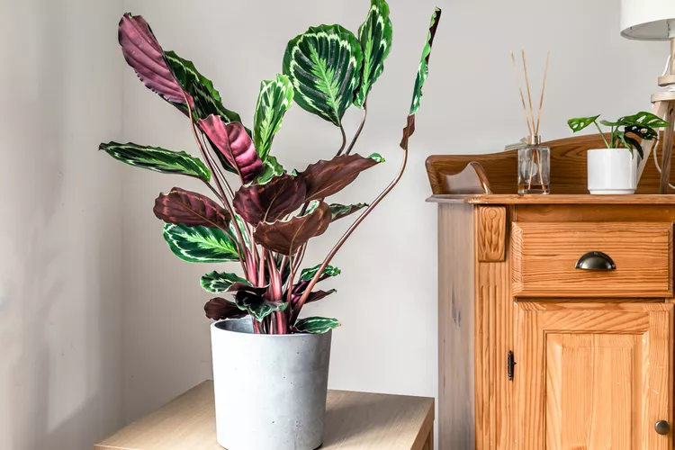
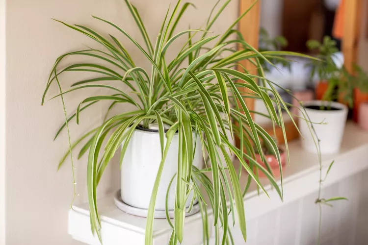

Easy houseplants can take care of themselves. Your biggest problem might be what to do with all the baby plants they'll produce. Spider plants, snake plants, and jade plants are among the best indoor plants that are low-maintenance and easy to keep alive; they are great for beginners. Read on for more plants that fit the same bill.
Christmas cactus
The Holiday cactus is a trailing member of the cactus family that produces deep pink or red flowers in early winter. This is the type of plant that seems to do its best when ignored. It can handle low light but will produce more flowers in bright light. Pruning the houseplant after blooming will keep it bushy and full.
You can force your Holiday cactus to bloom in December by keeping it in complete darkness for 12 hours per night, beginning in about mid-October. Leave it in the dark until buds appear. An even easier method is to subject it to cool temperatures (50-55 degrees) starting in November. Leave the plant on a windowsill at home when the heat is off and you are at work. You should see flower buds forming in weeks. (USDA zones 9-11).
Jade Plant
Calathea
Spider Plant
- First item on unordered list
- Second item on unordered list
- Third item on unordered list
- First item on unordered list
- Second item on unordered list
- Third item on unordered list